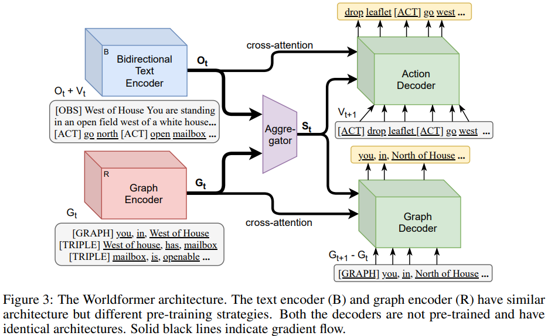

Ammanabrolu and Riedel frame a Set of Sequences (SOS) generation problem. Contribute loss function + Worldformer.
we hypothesize that agents that rely on lifted representations of the world will benefit from more than just memorization but the ability to predict how the graph state representation will change. For example, by inferring that a locked chest is likely to contain treasure before it is actually revealed provides an agent with a form of look-ahead that will potentially enable it to bias its actions towards opening such a chest.
Conclusions seem to be:
- Predicting KG differences between states makes the problem more tractable;
- Multi-task training improvements: acting & mapping in Jericho games is highly correlated, thus benefits from joint solving;
- Improvements from SOS loss: account for graph properties.
Dataset: JerichoWorld
27 text games for 24,198 mappings between NL observations and
- KGs as \((s, r, o)\) tuples reflecting world state.
- NL actions that guarantee to cause changes in a particular world state.
They use a random 10% of the training set for validation. Further 7,836 heldout instances over 9 additional games in the test set.
Not traditional RL, instead outputs for the 2 tasks are:
- From current observations and graph, predict some/all of the next KG.
- From current observations and graph, predict some/all of the valid actions.

Example input:
Game: ztuu
Location: Cultural Complex This imposing ante-room, the center of (...).
North of here, a large hallway passes (...). To the east, (...). South, (...).
You can see a pair of razor-like gloves here.
Observation: You put on the razor-like gloves.
Inventory:
You are carrying:
a brass lantern (providing light), (...)
four candy bars:
a ZM$100000
a Multi-Implementeers (...)
Prev Act: put on gloves
Inventory Objects:
candy: Which do you mean, the ZM$100000, the Multi Implementeers, (...)
Implementeers: The profiles on the wrapper of this delicacy look (...)
sword: This is a cheaply made sword of no antiquity whatsoever (...)
rune: The label is covered with mystical runes (...)
Inventory Attributes:
glasses: clothing
gloves: clothing
sword: animate, equip
lantern: animate, equip
Surrounding Objects:
gargoyles: Unless you are inordinately masochistic, the less time (...)
east: You see nothing special about the east wall.
tunnel: The tunnel leads west.
gloves: (...) would be very attractive for an axe murderer (...)
south: You see nothing special about the south wall.
sign: The sign indicates today’s performance (...)
Surrounding Attributes:
gloves: clothing
tunnel: animate
sign: animate
Graph:
[sign, in, CC], [you, have, sword], [tunnel, in, CC], [you, in, CC],
[glasses, is, clothing], [gloves, is, clothing], [lantern, is, equip] (...)
Valid Actions: west, turn lantern off, east, south, (...)
Baselines
- OpenIE based on Ammanabrolu’s previous work.
- Q*BERT: Question-Answering ALBERT, e.g. “What is my current location?” Trained on SQuAD 2.0 and JerichoQA.
- Seq2Seq: Bidirectional BERT encoder for observation+graph. Autoregressive GPT-2 decoder to decode the next graph. Trained using cross-entropy loss.
- GATA-World predicts
(add|del, h, r, t)using single-task CE loss.
Model: Worldformer
Multi-task: knowledge graph + action generation. Basically two transformer encoders w/ different objectives. Sample inputs:
[OBS] West of house (...) [ACT] go north [ACT] open mailbox (...)[GRAPH] you, in, West of house [TRIPLE] West of house, has, mailbox [TRIPLE] mailbox, is, openable (...)
Pooled embeddings from the 2 encoders are concatenated. Decoder also (of course!) attends to individual token vectors.

Outputs, KG difference \(G_{t+1} − G_t\) and the valid actions \(V_{t+1}\), are both Sets of Sequences: token ordering matters within, but not between. Usual loss is standard max-likelihood:
\[L_{\mathrm{seq}} = \log \mathbb P(Y|X) = \sum_i^{M+1}\log \mathbb P(y_i | y_{0:i-1}), X)\]Their set-of-sequences loss groups tokens together.
\[Y_{\mathrm{sos}} = \{y_1'\ldots y_N'\}, y_i' \in V_{t+1} \cup (G_{t+1} - G_t) \\ y_i' = \{y_k, \ldots y_{k+l}\}, \sum_j \mathrm{len}(y_j') = M \\ L_{\mathrm{sos}} = \sum_j^{M+1} \sum_{k=l}^{l+n} \log p(y_k | y_{l:k-1}), X; \theta) \\ \mathrm{where}\ l = \sum_{j<i} \mathrm{len}(y_j'), n = \mathrm{len}(y_i')\]Finally, we can infer \(G_t - G_{t+1}\) due to some JerichoWorld invariants:
- Locations are fixed and unique (their relative positions don’t change)
- Objects and characters can only be in one location at a time;
- Contradicting attributes can be discarded (e.g. WordNet:
!(open & closed))
Hence this output is not predicted by their decoder.
Methodology
Encoders similar to BERT, decoders similar to GPT-2. Trained until validation acc does not improve for 5 epochs or 96 hours (4 GeForce RTX 2080 GPUs), 3 random seeds. Decoding using beam search with a beam width of 15 at test time until EOS.
Vocabulary for the action decoder is 11,056 and 7,002 for the graph decoder. The graph decoder vocab contains all entities and relations from train+test. Full set of hyperparameters on the last page, Table 5.
JerichoWorld devs note that there is a correlation between performance of the baseline Seq2Seq model to the average number of valid actions for the testing game. [Likely due to dataset imbalance; the model likely learns] a common set of actions found across all games [e.g. navigation] before fine-grained ones.